Production Files & Blueprints
Standardizing spatial tokens across digital and print media with structured 8-point typographic grids and UI systems.
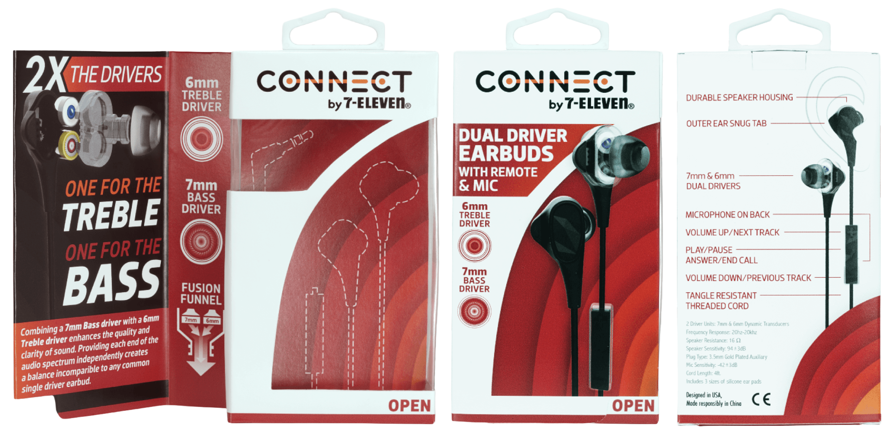
Translating physical structural requirements into flat vector die-lines required extreme accuracy. Tolerances were mapped to 0.1mm specifications to guarantee zero misalignment during high-speed automated folding and gluing cycles.
Translating physical structural requirements into flat vector die-lines required extreme accuracy. Tolerances were mapped to 0.1mm specifications to guarantee zero misalignment during high-speed automated folding and gluing cycles.
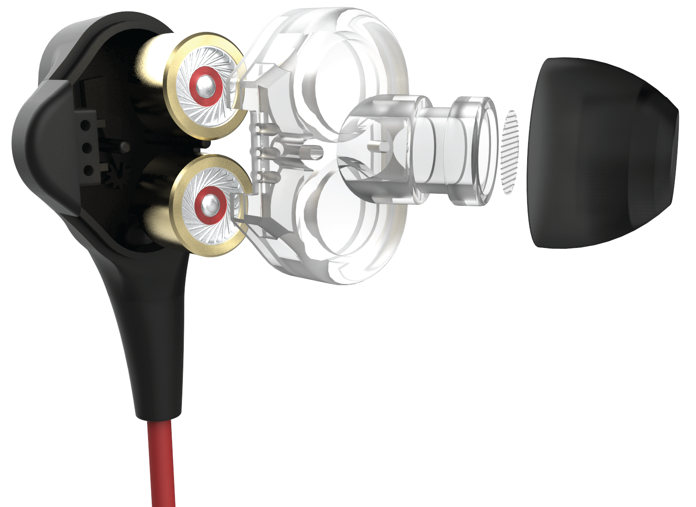
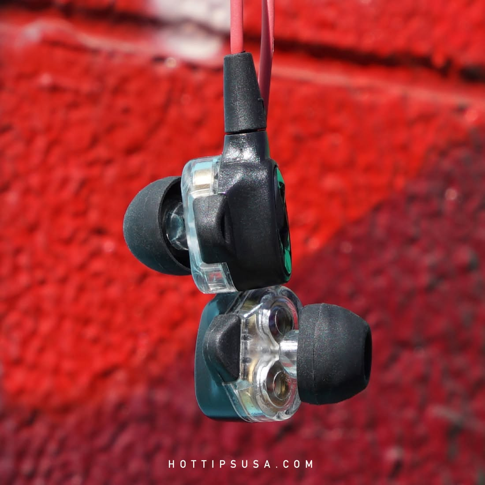
Standardizing spatial tokens across digital and print media with structured 8-point typographic grids and UI systems.
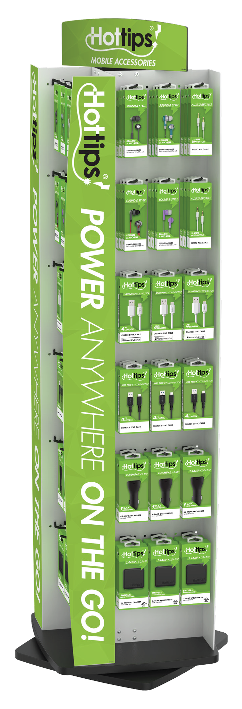
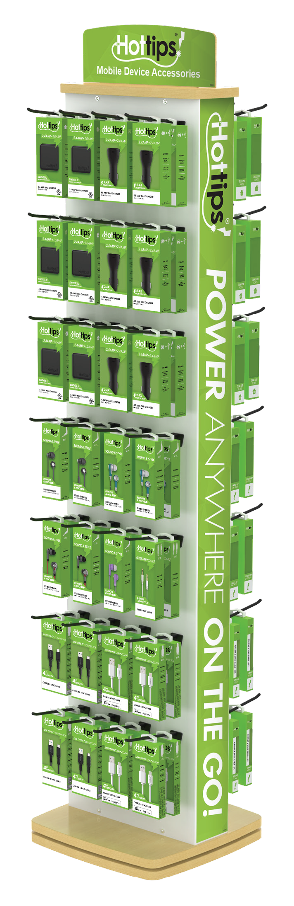
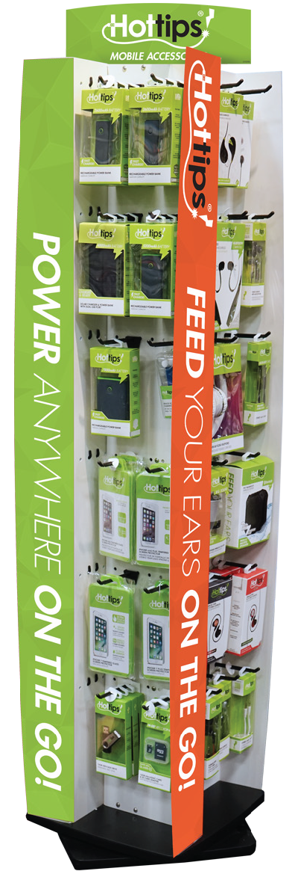
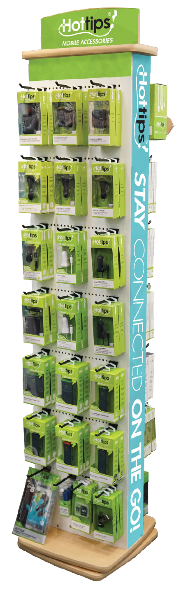
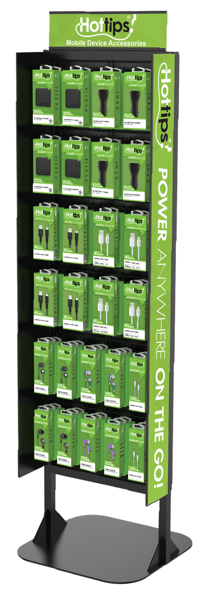
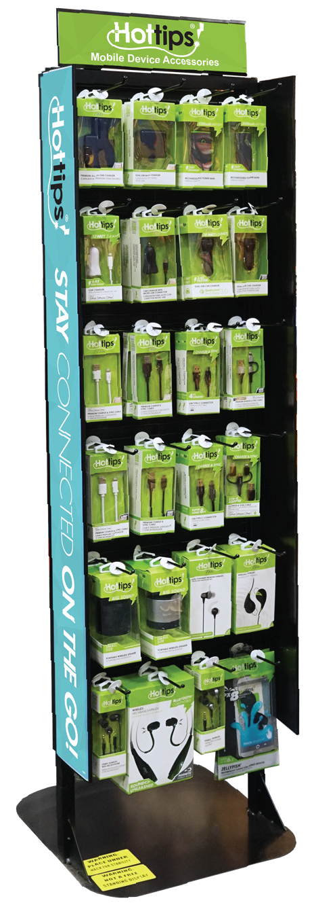
Translating physical structural requirements into flat vector die-lines required extreme accuracy. Tolerances were mapped to 0.1mm specifications to guarantee zero misalignment during high-speed automated folding and gluing cycles.
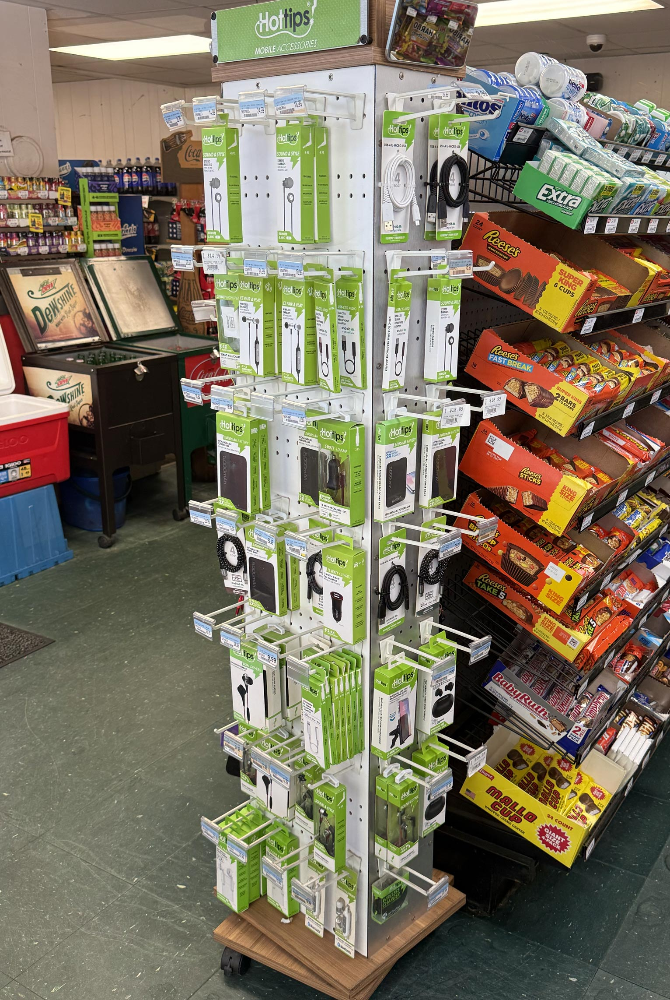
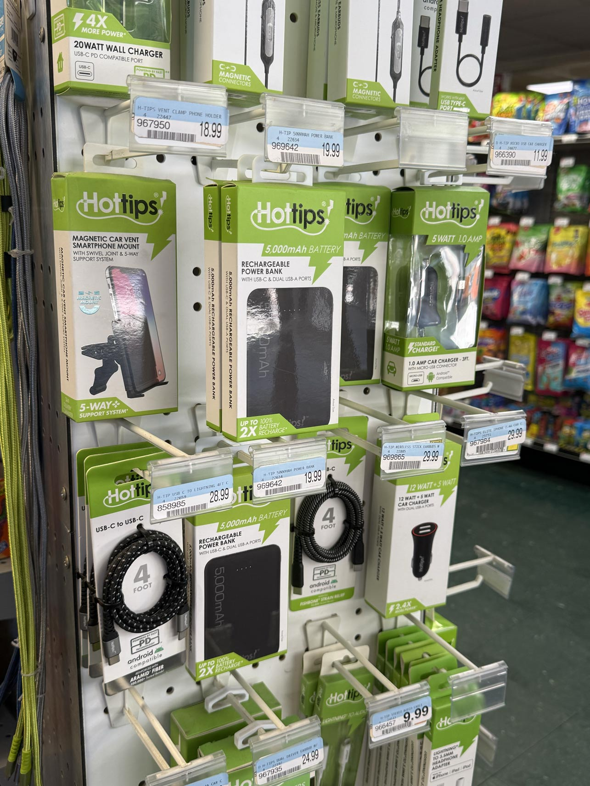
Translating physical structural requirements into flat vector die-lines required extreme accuracy. Tolerances were mapped to 0.1mm specifications to guarantee zero misalignment during high-speed automated folding and gluing cycles.
My pipeline bypassed traditional flat formatting rules. I mapped out full interior digital schematics of the internal wiring, translating rigid industrial designs into an energetic, high-impact marketing system built to dominate store shelves.
Proof I'm human.

![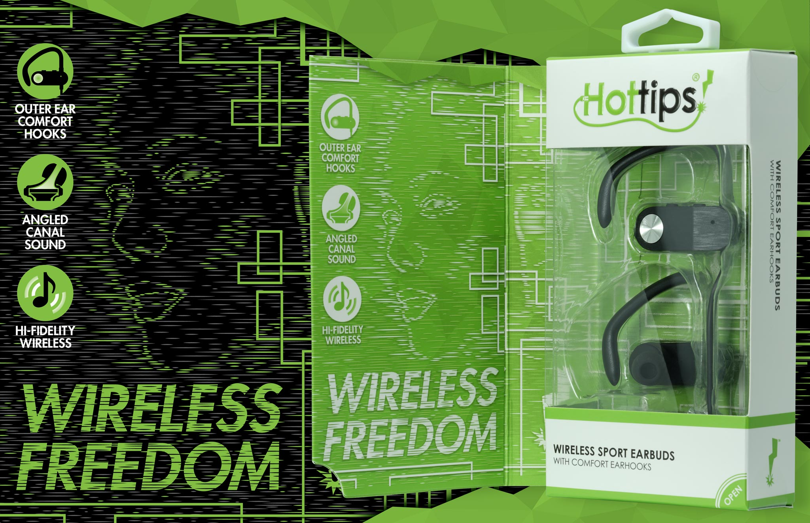 [ Crease & Fold Map ]](assets/electronics-packaging/ht-earbud-1.jpg){kind=link}
![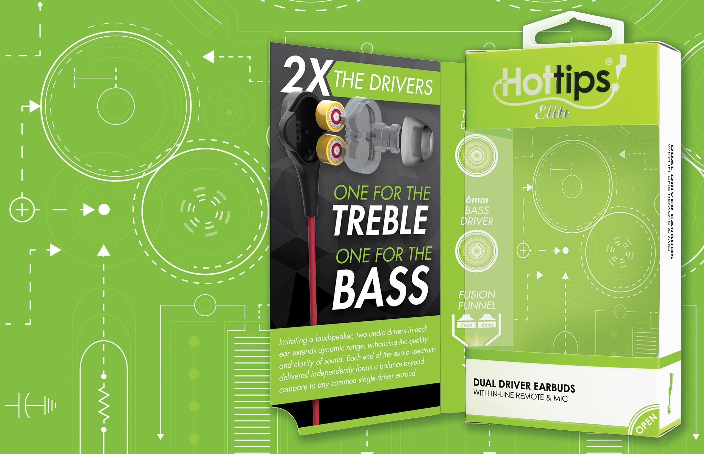 [ Material Spec Sheet ]](assets/electronics-packaging/ht-earbud-2.jpg){kind=link}
![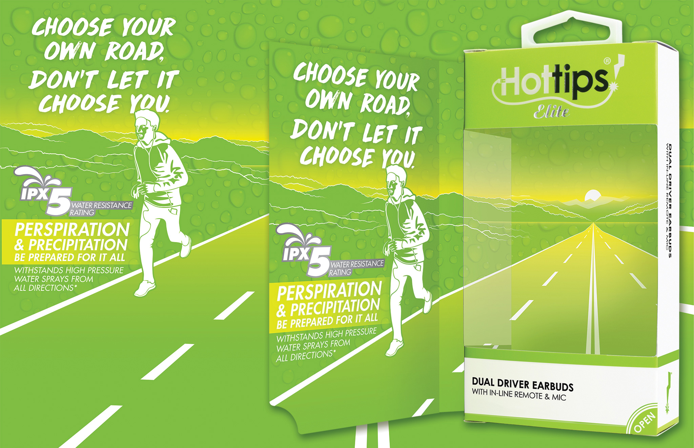 [ Material Spec Sheet ]](assets/electronics-packaging/ht-earbud-3.jpg){kind=link}